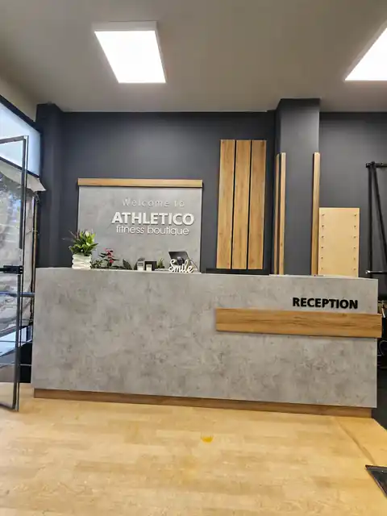

2000
Το Athletico ξεκινά στο κέντρο των Τρικάλων με όραμα την ποιότητα ζωής μέσω της κίνησης.

Ένας boutique χώρος όπου η κίνηση, η προσωπική φροντίδα και η ευεξία συναντιούνται.
Δημιουργούμε προσωπικές εμπειρίες ευεξίας.
Κίνηση με σκοπό. Φροντίδα με συνέπεια.
Προσωπική καθοδήγηση με συνέπεια και σκοπό.
Κίνηση, ρυθμός και ισορροπία σε ολιγομελή εμπειρία.
Δύναμη, έλεγχος και ενέργεια.
Αρμονία σώματος και πνεύματος.
Μια σύγχρονη εμπειρία κίνησης και αναζωογόνησης.
Τεχνολογία και εξατομικευμένη καθοδήγηση.
Χρόνος αφιερωμένος στην προσωπική περιποίηση.
Το Athletico ξεκινά στο κέντρο των Τρικάλων με όραμα την ποιότητα ζωής μέσω της κίνησης.
Ανακαινίζεται και μετατρέπεται σε Fitness Boutique: άνετοι χώροι, μικρές ομάδες και πιο προσωπική εμπειρία.
Λειτουργεί ως ολοκληρωμένο Wellness Center, με σύγχρονες εμπειρίες και γνώση άνω των 25 ετών.
Πτυχιούχος ΤΕΦΑΑ · Pilates Reformer Instructor
ΓΝΩΡΙΣΕ ΤΗΝ ΟΜΑΔΑΠτυχιούχος ΤΕΦΑΑ · Personal & Mini Group Instructor
ΓΝΩΡΙΣΕ ΤΗΝ ΟΜΑΔΑ«Εξαιρετικά προγράμματα, στοχευμένα στις ανάγκες κάθε αθλούμενου. Έμπειροι γυμναστές, ευχάριστο περιβάλλον, ευγένεια, καθαρός χώρος.»
Έφη. · GoogleMap
«Τέλειο περιβάλλον, πολλά προγράμματα, άψογη υποστήριξη ειδικών σε κάθε πρόγραμμα.»
Ελένη Τ. · GoogleMap